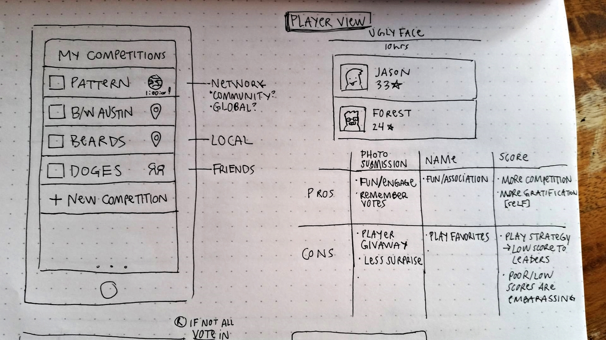
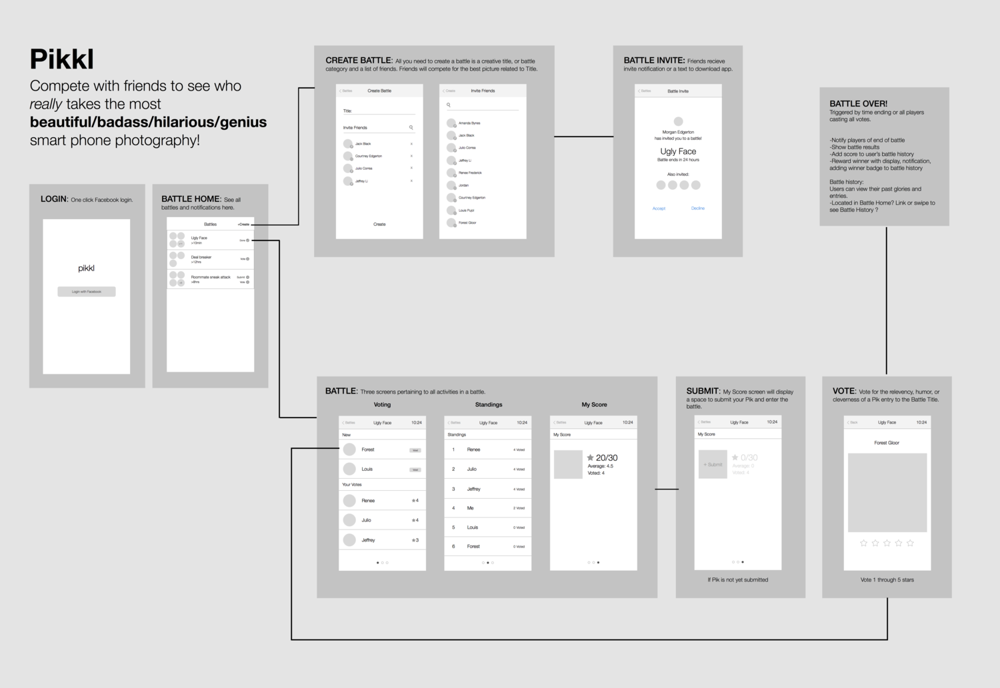
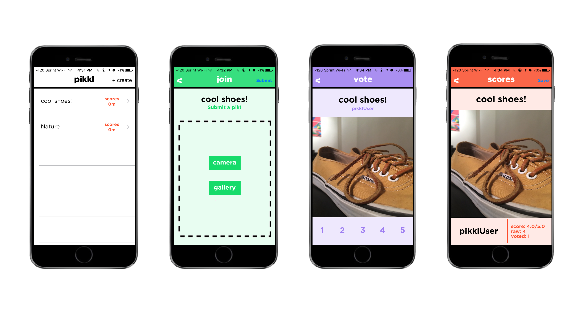

iOS App for Mobile Development Class. Worked with team of two other Computer Science students to program this app. We used Swift, Facebook API, and Parse to build the app. It was built over the course of 10 weeks.
Purpose:
An original iOS app developed for: CS 378 iOS Mobile Computing [team of three developers]
Roles:
Front End Development - Swift, Wire-Framing, Prototyping, Sketching, UI Design, Game Design, and Concept
Game:
User creates a Battle by choosing a Title to take photos of [e.g., Ugliest faces], and inviting friends to play. Players compete in a Battle by uploading their best pictures of the Title topic before the time limit. Once photos are submitted, users rate their friend's submitted photos from 1-5. The photo with the highest average score wins!
Brainstorm, concept, research:
We brainstormed about the app and considered competition, features, and users. This research is featured at the beginning of this case study. The idea for this app came as an analog for a game Morgan Edgerton would play with her friends, in which they would take goofy sel es, then show them to each other to see who had taken the funniest one. As we began to re ne the idea, we used other photo competitions as a reference to see how they worked. We learned that shorter competitions engage users more. We learned that photos were usually compared in categories, which led us to use categorical comparison for photos. Most importantly, we realized that at it's essence, a photo-competition was comprised of four steps: Creation, Submission, Voting, and Results.
Game Design:
After doing research, we needed a way to structure the game in order to make it fair, intuitive, and engaging for us- ers. We chose to structure battles in three stages. All players participating in the battle would see the same three stages. This meant that all users had the same amount of time to submit, all users voted based only on the title of the battle (users cannot see other submissions until after the submission phase is over) which meant that all users had the same preparation for submission. We made sure that users could only submit to a battle once, could not vote on their own image, and could only vote on other user's images once in order to remain fair. In order to calculate scores, we averaged the number of votes an image received. This ensured that all image's scores were compared fairly. We used different colors for each phase and consistent titles for each phase to make sure it was not confusing.

Sketching and Wireframing:
After we had solidified the concept and game design, we began sketching user interface ideas. This helped us to get a sense of how many screens we would need, and let us work as a team to bounce ideas off of each other and decide what was viable within the app's interface. Once we had sketched through the user ows, we laid them out in Sketch to create a wireframe. This wireframe served as a guide while we developed the app. It informed what buttons would go on each screen and how screens related to each other.

Development:
We started by planning the database to store information for battles and users. We began working on the database concurrently with the sketching and wireframing. Once we had decided on a ow for the app, we created ViewCon- trollers in Xcode for each of the screens we would need. We used Parse for a databse, the app was programmed in Swift 2.0, and we designed the UI using Storyboard in Xcode. We used trello to manage all the tasks we had to complete.
High Fidelity Mockups, Color, Type, Styling, and inVision:
After we had de ned the user ow and begun programming the app, we started working on the styling for the nal product. We experimented with various color schemes and styles (shown below in chronological order from left to right). Throughout this process, we made sure to consider the medium we were designing for (iOS) and how to de- sign in a style that is compliant with iOS best practices and design. We began to do user testing with our inVision app (https://projects.invisionapp.com/share/AR54JMCG6#/screens) in order to identify any confusing user interfaces problems.
Results
The resulting app met our MVP expectations and was styled similarly to our high- delity designs. The experience of creating a product from inception to completion was very rewarding and working with two great teammates made for an enjoyable learning experience for us all.

Here's the github for project: https://github.com/lijeffreytli/pikkl